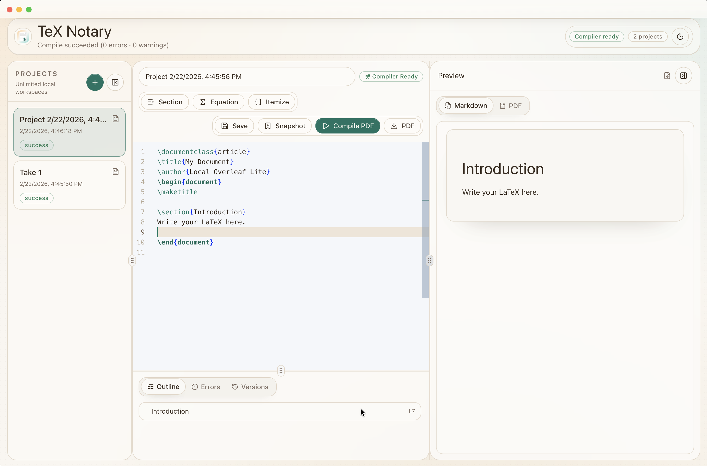
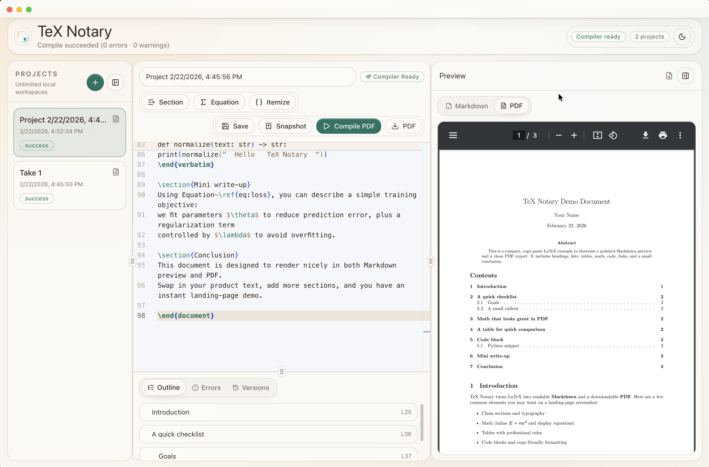
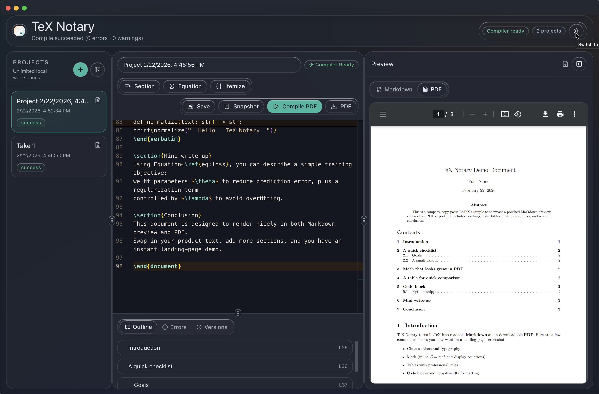

Unlimited Projects
No workspace limits. Keep every draft and variant locally.
TeX Notary
Desktop-first LaTeX workspace
Desktop App
TeX Notary gives you a focused desktop environment for writing technical documents, resumes, and reports. Keep unlimited projects on your machine, track snapshots over time, and switch between fast Markdown preview and production PDF output.
Unlimited Projects
No workspace limits. Keep every draft and variant locally.
Snapshot Timeline
Save and restore checkpoints without juggling branches.
Markdown + PDF
Read quickly in Markdown, compile polished PDF on demand.



Who it is for
Engineers, researchers, and builders who want control.
If your workflow depends on reproducible output, local ownership, and fast iteration, TeX Notary keeps your writing loop clean.
Desktop Releases
Download signed build artifacts directly from GitHub Releases and run TeX Notary locally.